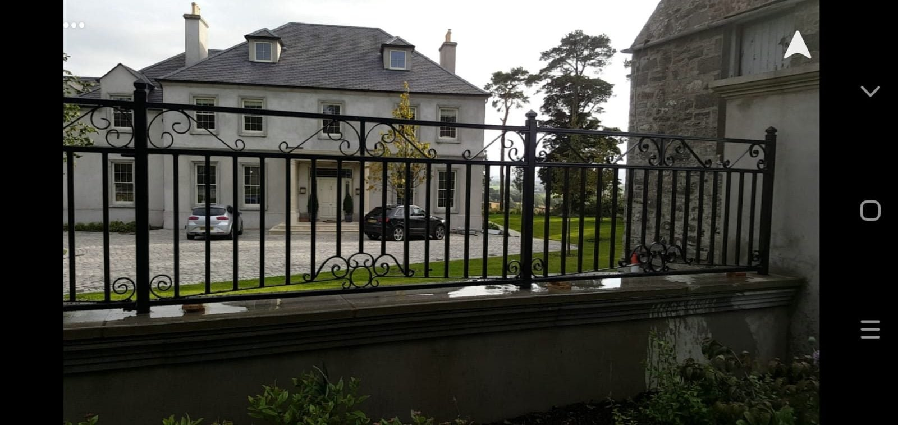

BALCONIES
Project balcony and railings at a home

Part of the wider picture.
Discuss the design, intended use and practical requirements of your own project with the team.
Back to the gallery ←BALCONIES

Discuss the design, intended use and practical requirements of your own project with the team.
Back to the gallery ←A PRACTICAL NEXT STEP
028 4063 2028